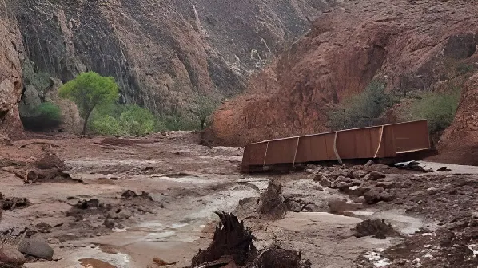

Le 29 août 2026, vers 14 h 30, une crue éclair d'une violence exceptionnelle a dévalé Bright Angel Creek, au fond du Grand Canyon, en Arizona. Deux randonneurs texans ont perdu la vie, un troisième reste porté disparu, et environ 82 personnes ont dû être hélitreuillées. Au-delà du bilan humain, la catastrophe a détruit la quasi-totalité des passerelles du canyon intérieur et endommagé près de 40 % de l'unique conduite d'eau qui alimente l'un des parcs nationaux les plus fréquentés des États-Unis.
Le samedi 29 août 2026, une série d'orages liés à la mousson d'Arizona s'abat sur le plateau de Kaibab et sur la rive nord du Grand Canyon. Les intensités relevées atteignent jusqu'à 25 mm de pluie par heure ; au plus fort de l'épisode, près de 17 mm tombent en un quart d'heure. Sur un relief abrupt, minéral et faiblement végétalisé, l'eau ne s'infiltre pas : elle ruisselle et se concentre dans les gorges étroites qui convergent vers Bright Angel Creek.
Vers 14 h 30, le ruisseau se transforme en torrent. Le niveau grimpe de plus d'un mètre cinquante en dix minutes ; des témoins évoquent des vagues chargées de boue et de blocs atteignant jusqu'à cinq mètres de hauteur. La crue emporte des bâtiments, des véhicules de chantier et le matériel de construction stocké au fond du canyon, tout en déclenchant chutes de blocs, glissements de terrain et coulées de boue.
« [Nous avons vu] des cascades surgir de nulle part, des blocs, de la boue, des glissements de terrain partout. »
— Parth Desai, rescapé, cité par l'Associated PressLe National Park Service, appuyé par l'Arizona Department of Public Safety, lance dès le samedi soir une vaste opération d'hélitreuillage. Soixante-deux personnes sont extraites de Phantom Ranch et du bas du North Kaibab Trail dans la matinée du 30 août ; au total, environ 82 visiteurs sont secourus. Les évacués sont regroupés à la cafétéria du Maswik Lodge, sur la rive sud, où la Croix-Rouge américaine coordonne l'assistance.
Le décompte des personnes non localisées illustre la confusion des premières heures : plus de vingt le dimanche, quinze le lundi matin, puis douze, avant de tomber à une seule. Les rangers ont passé des centaines d'appels et relevé les plaques d'immatriculation des parkings pour retrouver la trace des randonneurs partis sans réseau.
Les corps de John Giusti, 46 ans, chiropracteur, et de Brent Rosenkranz, 42 ans, gérant d'un club d'arts martiaux, tous deux originaires de Granbury (Texas), ont été retrouvés les 30 et 31 août — le premier près des Crystal Rapids, sur le Colorado. Leur ami d'enfance Timothy Allen Smith, 53 ans, pilote installé dans le Wyoming, reste introuvable. Les recherches, menées avec des équipes cynophiles, des drones et des patrouilles fluviales, ont été à plusieurs reprises interrompues par de nouveaux orages.
La crue éclair dévale Bright Angel Creek. Phantom Ranch, le Bright Angel Campground et le North Kaibab Trail sont submergés ou coupés.
62 personnes hélitreuillées. Le corps d'un homme de 46 ans est retrouvé près des Crystal Rapids. Le Colorado est fermé à la navigation.
Entrée en vigueur des restrictions d'eau de « stade 4 » sur la rive sud : fermeture de tous les hébergements du parc, camping sec, interdiction totale du feu.
Le NPS identifie les deux victimes. Le nombre de personnes non localisées tombe à une seule. L'estimation des dégâts sur la conduite atteint 40 %.
Les recherches se poursuivent pour Timothy Smith, avec l'appui du BORSTAR (patrouille frontalière) et du Coconino County Search and Rescue.
La conséquence la plus lourde n'est pas immédiatement visible. Le Transcanyon Waterline, une conduite de 20 kilomètres construite dans les années 1960-1970, achemine l'eau depuis une source du canyon intérieur jusqu'à la rive sud, en passant sous le Colorado. C'est l'unique source d'eau potable pour environ six millions de visiteurs annuels et quelque 2 500 résidents permanents ; elle alimente aussi le réseau de défense incendie des bâtiments du parc.
Après des survols de reconnaissance, les responsables du parc estiment que près de 40 % de la conduite a été endommagée ou détruite. L'ouvrage était déjà à bout de souffle : plus de 85 ruptures majeures depuis 2010, chaque réparation coûtant souvent plus de 25 000 dollars et nécessitant un acheminement par hélicoptère. Un chantier de remplacement de 208 millions de dollars, lancé en 2023 après plus d'une décennie d'études, était en cours au moment de la crue — et se trouve désormais lui-même endommagé.
| Site | Nature | État après la crue |
|---|---|---|
| Passerelles de Bright Angel Creek | Accès piéton canyon | ❌ Quasi toutes détruites |
| Phantom Ranch | Lodge de 1922 | ❌ Fermé, dégâts en cours d'évaluation |
| North Kaibab Trail | Sentier majeur | ❌ Fermé sur toute sa longueur |
| Transcanyon Waterline | Adduction d'eau | ❌ ≈ 40 % hors service |
| Rive sud (South Rim) | Accueil du public | ⚠ Ouverte en journée seulement |
Les crues éclair ne sont pas une nouveauté dans le Grand Canyon : la saison de la mousson nord-américaine, de juin à septembre, en produit chaque année. Mais plusieurs éléments ont amplifié celle-ci. Les hydroclimatologues soulignent d'abord la présence d'un épisode El Niño marqué, qui a chargé l'atmosphère du Sud-Ouest américain en vapeur d'eau, restituée sous forme de précipitations plus intenses.
S'y ajoute une tendance de fond. Le climatologue Daniel Swain et ses coauteurs ont publié en 2026, dans Weather and Climate Extremes, une étude concluant que les averses estivales de courte durée dans l'Ouest américain ont gagné environ 10 % d'intensité depuis 2000. Enfin, la crue s'est déclenchée sous la cicatrice d'incendie laissée en juillet 2025 par le Dragon Bravo Fire — qui avait ravagé plus de 145 000 acres et détruit le Grand Canyon Lodge de la rive nord : un sol brûlé, hydrophobe, accélère considérablement le ruissellement. La sécheresse persistante du bassin du Colorado a fait le reste.
« Presque toutes les passerelles enjambant Bright Angel Creek ont été détruites. »
— National Park Service, communiqué du 30 août 2026En treize mois, le Grand Canyon a perdu son unique hôtel de la rive nord dans un mégafeu, puis vu son cœur historique dévasté par une crue. Deux visages du même phénomène : la multiplication d'événements extrêmes qui se renforcent mutuellement — l'incendie prépare le terrain de l'inondation. La leçon dépasse largement l'Arizona. Elle interroge la capacité des sociétés développées à maintenir des infrastructures anciennes, coûteuses et difficiles d'accès, dans un climat qui ne ressemble plus à celui pour lequel elles ont été dimensionnées. Une conduite d'eau conçue dans les années 1960 pour un régime hydrologique stable devient un point de rupture unique dont dépendent six millions de visiteurs. Restaurer Phantom Ranch et le Transcanyon Waterline ne sera pas seulement une opération de génie civil : ce sera un arbitrage politique et budgétaire sur ce que les États-Unis acceptent encore de dépenser pour rendre habitable un patrimoine naturel devenu, saison après saison, plus imprévisible.
On August 29, 2026, at around 2:30 p.m., an exceptionally violent flash flood tore down Bright Angel Creek at the bottom of the Grand Canyon in Arizona. Two Texan hikers were killed, a third remains missing, and roughly 82 people had to be airlifted to safety. Beyond the human toll, the disaster destroyed almost every footbridge in the inner canyon and damaged close to 40% of the single pipeline supplying water to one of America's most visited national parks.
On Saturday, August 29, 2026, a series of thunderstorms fed by the Arizona monsoon swept across the Kaibab Plateau and the canyon's North Rim. Rainfall rates reached up to an inch an hour; at the storm's peak, two-thirds of an inch fell in a quarter of an hour. On steep, rocky, sparsely vegetated terrain, the water did not soak in — it ran off and funnelled into the narrow side gorges feeding Bright Angel Creek.
By around 2:30 p.m. the creek had become a torrent. Water levels rose more than five feet in ten minutes; witnesses described walls of mud and boulders reaching some fifteen feet high. The flood swept away buildings, construction vehicles and equipment stored on the canyon floor, while triggering rockfalls, landslides and mudflows.
"[We saw] waterfalls coming up out of nowhere, boulders, mud, landslides happening everywhere."
— Parth Desai, survivor, quoted by the Associated PressThe National Park Service, supported by the Arizona Department of Public Safety, launched a large-scale helicopter evacuation from Saturday evening onwards. Sixty-two people were lifted out of Phantom Ranch and the lower North Kaibab Trail on the morning of August 30; in total, some 82 visitors were rescued. Evacuees were gathered at the Maswik Lodge cafeteria on the South Rim, where the American Red Cross coordinated assistance.
The shifting count of unaccounted-for visitors captures the confusion of those first hours: more than twenty on Sunday, fifteen by Monday morning, then twelve, before falling to a single person. Rangers made hundreds of phone calls and checked licence plates in trailhead car parks to trace hikers who had set off beyond mobile coverage.
The bodies of John Giusti, 46, a chiropractor, and Brent Rosenkranz, 42, who ran a martial arts studio — both from Granbury, Texas — were recovered on August 30 and 31, the first near Crystal Rapids on the Colorado River. Their childhood friend Timothy Allen Smith, 53, a pilot living in Wyoming, is still missing. The search, using scent-detection dog teams, drones and river patrols, has repeatedly been suspended by further storms.
The flash flood surges down Bright Angel Creek. Phantom Ranch, Bright Angel Campground and the North Kaibab Trail are inundated or cut off.
62 people airlifted out. The body of a 46-year-old man is recovered near Crystal Rapids. The Colorado River is closed to river traffic.
Stage 4 water restrictions take effect on the South Rim: all in-park lodging closed, dry camping only, a total ban on fires.
The NPS identifies the two victims. The number of unaccounted-for visitors drops to one. Damage to the waterline is put at roughly 40%.
The search for Timothy Smith continues, with support from Border Patrol's BORSTAR unit and Coconino County Search and Rescue.
The heaviest consequence is not immediately visible. The Transcanyon Waterline, a 12.5-mile pipe built in the 1960s and 1970s, carries water from a spring in the inner canyon up to the South Rim, crossing beneath the Colorado River on the way. It is the only source of drinking water for roughly six million annual visitors and some 2,500 year-round residents, and it also feeds the fire-suppression system for the park's buildings.
After reconnaissance flyovers, park officials estimated that about 40% of the line had been damaged or destroyed. The structure was already at the end of its life: more than 85 major breaks since 2010, each repair often costing over $25,000 and typically requiring helicopter access. A $208 million replacement project, launched in 2023 after more than a decade of design and funding work, was under way when the flood struck — and has itself been damaged.
| Site | Function | Status after the flood |
|---|---|---|
| Bright Angel Creek footbridges | Inner canyon access | ❌ Nearly all destroyed |
| Phantom Ranch | 1922 lodge | ❌ Closed, damage being assessed |
| North Kaibab Trail | Major trail | ❌ Closed along its full length |
| Transcanyon Waterline | Water supply | ❌ ≈ 40% out of service |
| South Rim | Visitor services | ⚠ Open for day use only |
Flash floods are nothing new in the Grand Canyon: the North American monsoon season, running from June to September, produces them every year. But several factors amplified this one. Hydroclimatologists point first to a strong El Niño episode, which loaded the atmosphere over the American Southwest with water vapour that was then wrung out as more intense rainfall.
A longer-term trend compounds this. Climate scientist Daniel Swain and co-authors published a study in 2026 in Weather and Climate Extremes concluding that short, intense summer downpours in the American West have grown roughly 10% stronger since 2000. Finally, the flood was triggered beneath the burn scar left in July 2025 by the Dragon Bravo Fire, which had scorched more than 145,000 acres and destroyed the North Rim's Grand Canyon Lodge: burnt, water-repellent soil dramatically accelerates runoff. Persistent drought across the Colorado basin did the rest.
"Nearly all footbridges spanning Bright Angel Creek were destroyed."
— National Park Service, press release, August 30, 2026In thirteen months, the Grand Canyon has lost its only North Rim hotel to a megafire and seen its historic heart devastated by a flood. These are two faces of the same phenomenon: a proliferation of extreme events that reinforce one another, with fire preparing the ground for flooding. The lesson reaches far beyond Arizona. It raises the question of whether developed societies can maintain ageing, expensive and hard-to-reach infrastructure in a climate that no longer resembles the one it was designed for. A water pipeline built in the 1960s for a stable hydrological regime becomes a single point of failure on which six million visitors depend. Rebuilding Phantom Ranch and the Transcanyon Waterline will not merely be a civil engineering exercise: it will be a political and budgetary judgement about what the United States is still willing to spend to keep a natural heritage habitable in a world that grows, season by season, less predictable.